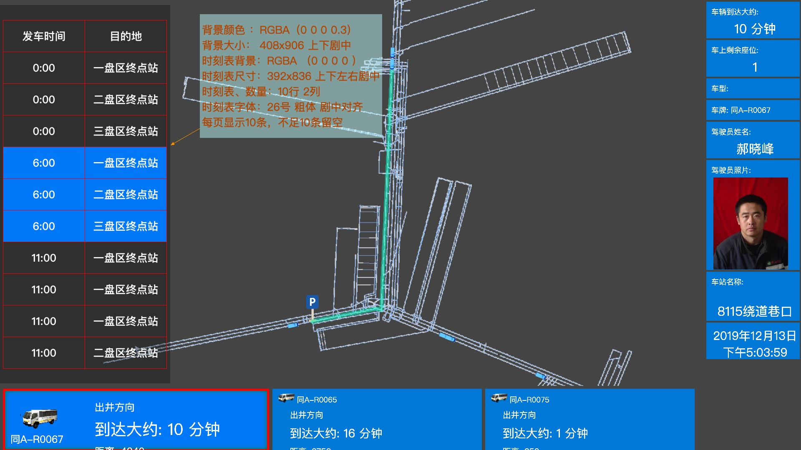

辅助运输二期任务(12月016日-12月20日)
车载终端APP
花雷
- 测试已走过路径
- 平板呼叫的时候响铃时间
- 测试重构代码的稳定性
- 应用程序适配竖版
左俊
- 测试分段视频存储
- 车载终端APP地图下载
- 车载终端APP地图安装
- 车载终端接通页面
- 新订单增加提示音
- 增加出车页面
- 增加收车页面
服务端
母玉峰
- 自动结束任务分析
- 语音广播功能
设计功能模型
周三讨论设计思路
王垒
- 175服务器开通FTP
- 显示候车站车辆类型
- 候车站增加正点车时刻标
组织数据结构
| 发车时间 | 目的地 | 发车地点 | 运送人员类型 | 途径候车站 | 备注 |
|---|---|---|---|---|---|
| 0:00 | 一盘区终点站 | 副井口 | |||
| 0:00 | 二盘区终点站 | 副井口 | |||
| 0:00 | 三盘区终点站 | 副井口 | |||
| 6:00 | 一盘区终点站 | 副井口 | |||
| 6:00 | 二盘区终点站 | 副井口 | |||
| 6:00 | 三盘区终点站 | 副井口 | |||
| 11:00 | 一盘区终点站 | 副井口 | |||
| 11:00 | 一盘区终点站 | 副井口 | |||
| 11:00 | 一盘区终点站 | 副井口 | |||
| 11:00 | 二盘区终点站 | 副井口 | |||
| 11:00 | 二盘区终点站 | 副井口 | |||
| 11:00 | 三盘区终点站 | 副井口 | |||
| 12:00 | 一盘区终点站 | 副井口 | |||
| 12:00 | 二盘区终点站 | 副井口 | |||
| 12:00 | 三盘区终点站 | 副井口 | |||
| 18:00 | 一盘区终点站 | 副井口 | |||
| 18:00 | 一盘区终点站 | 副井口 | |||
| 18:00 | 二盘区终点站 | 副井口 | |||
| 18:00 | 二盘区终点站 | 副井口 | |||
| 18:00 | 三盘区终点站 | 副井口 | |||
| 18:00 | 三盘区终点站 | 副井口 | |||
| 19:00 | 一盘区终点站 | 副井口 | |||
| 19:00 | 二盘区终点站 | 副井口 | |||
| 19:00 | 三盘区终点站 | 副井口 |
- 增加时刻表UI
- 高亮即将派车的时刻（超时N分钟后高亮下一时刻）
- N分钟刷新显示时刻信息一次
- 间隔时间是可配置的
2
3
4
5
6
{
int time;// 可以以毫秒为单位 e.g. 500ms
// do some things
return time;
}

服务器进程守护预警 （孙虎）
- 记录守护进程出错信息
| 时间 | 问题类型 | 问题描述 |
|---|---|---|
| 2019-12-14 22:36:20 | 地图搜索 | 具体log信息 |
| 2019-12-14 22:36:20 | 登录问题 | 具体log信息 |
| 2019-12-14 22:36:20 | 里程统计 | 具体log信息 |
- 发送邮件正文增加解决方案
不通方案对应不通方案
大部分以URL形式给出
辅助运输菜单完善（孙虎）
- 工时统计
统计导出
默认本周‘车辆工时’
司机工时增加生产车队生产车队二队生产车队三队同车辆帅选 - 派车统计
增加
总计列
分类筛选生成车队生产车队二队生产车队三队
默认是生成车队